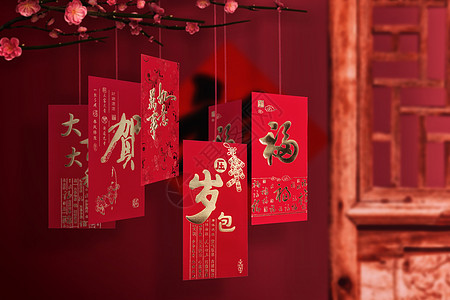

Ya Sui Qian, also called Lucky Money, means the money given to children as a lunar New Year gift, which is usually given by elders to younger people when visiting relatives and friends in the first month of the new year. Ya Sui Qian is usually wrapped in red paper, so it is also called red envelopes in China.The traditional concept of "Ya Sui Qian" can play a role in suppressing sneakiness and bad thing. It is the New Year's blessing given by the elders to the younger generation, and the children who get the Ya Sui Qian will spend the new year smoothly and safely.
